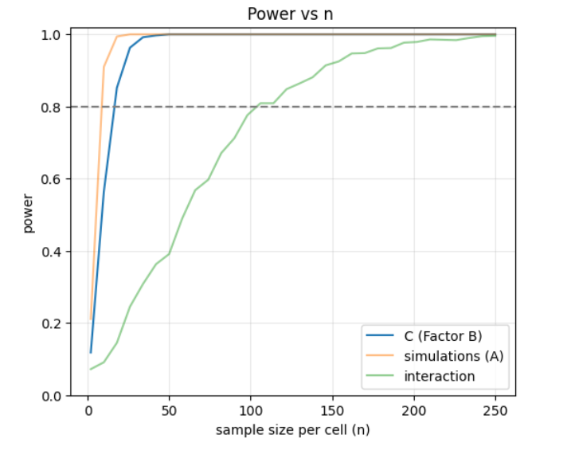
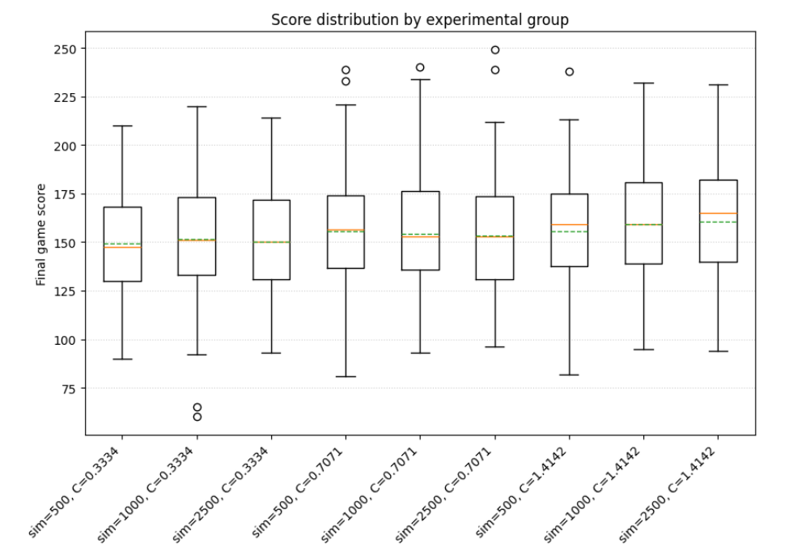
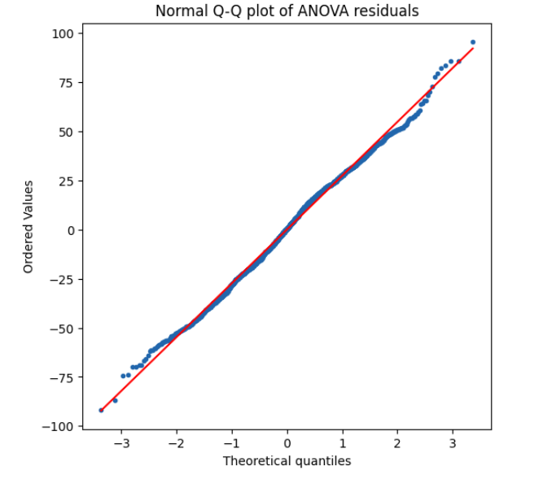

$ whoami > yacine bekka $ cat /etc/motd > personal site — notes, projects, experiments $ ls ~/ home/ blog/ portfolio/ contact/ $ _ |
|
Lightweight MCTS-based autonomous agent for YahtzeeTechnical report
AbstractIn this technical report, we present the implementation and results of a lightweight Monte Carlo Tree Search (MCTS)-based autonomous agent for the game of Yahtzee, a dice game that involve both luck and strategy. The autonomous agent is designed to run entirely within an internet browser, requiring no backend support, and consistently achieves an average score of \(154\) points. Additionally, we tested various combinations of MCTS hyperparameters and found that increasing the exploration constant \(C\) had a small positive effect on score (\(\text{p-value} \approx 1.8\times 10^{-6}\)) Introduction
Yahtzee is a popular dice game that offer an interesting challenge for reinforcement learning due to its combination of luck and strategy. In this game, the players roll five dice up to three times per turn, with the aim to meet specific scoring categories. The strategic element comes from deciding which dice to keep after roll and which scoring category to fill. This game is characterized as perfect information stochastic game, as all information on game are available to all player at any time. Reinforcement learning is a subset of machine learning where an agent learns to make decisions by making interactions within an environment. The agent receives rewards by performing actions in specific states of the environment, and its goal is to maximize the total reward over time. This paradigm fits well with many games, including Yahtzee, where each roll represents an action that leads to a new state and potential rewards based on the scoring rules.
Our goal is to create an autonomous Yahtzee agent that runs in an internet browser without any backend architecture and to evaluate the performance of the MCTS algorithm to determine if it offers a decent challenge for a human opponent. In addition to this initial objective, we also aim to gain the details of the value of each possible game action for the agent. This will allow a human player to receive real-time assistance from the agent during a game MethodsYahtzee as a Markov decision processFinite Markov decision process is an extension of Markov process that includes an agent that make decisions based on the stochastic process. More formally it is define as set of discrete-time steps and a tuple \(M = (S, A, P, R)\) defined as :
State spaceA state \(s\) must capture all the information necessary to make decisions and calculate scores. We define a state \(s = (D, L, O, B)\) with the following characteristics :
We can determine the state space size \(|S|\) to be \(252 \times 4 \times 2^{13} \times 64 = 528,482,304\) states. Assuming optimal data structure, the size of state in memory would be \(2 + 13 + 2 + 10 = 27\) bytes (\(41\) bytes if using integer instead of short integer). The total state space would take \(\approx 14\) GB. We could reduce the state space size at the cost of losing information about our state by removing \(B\). This would reduce \(|S|\) to \(8,257,536\) and the memory needed to \(\approx 206\) MB. Action spaceThe set of actions available \(A\) depends on the current state, particularly on the remaining rolls \(R\) and used categories \(C\). Actions can be categorized into two types : dice-rolling actions and scoring actions
More formally we denote the action space for each state as \[ A(s) =
\begin{cases}
A_{roll} \cup A_{score}(s) \text{ , if } R >0 \\
A_{score}(s) \ \ \ \ \ \ \ \ \ \ \ \ \text{ , if } R = 0\\
\end{cases}
\]
\[A_{score}(s) = A_{score} - \{x \in O | x = 1 \}\]
We note that the size of the action space is dynamic and will vary across the stages of the game :
\[|A(s)| = 2^5 - 1 + 13 = 44\]
\[|A(s)| = 2^5 - 1 + 12 = 43\]
This diminution in the action space size pursue until we reach the final state of the game where \(|\{x \in O | x = 1 \}| = 13\) Action are represented by a boolean indicating the type of action and for rolling actions a vector of 5 boolean that indicate dice to be kept. For scoring action, instead of the vector of boolean, we define an integer that indicate the index of the score outcomes in \(O\) Total memory size for an action would be \(8\) bytes and given the small size of the action space, the required memory for the action space is negligeable. Transition probability matrixThe transition probability matrix \(P\) describes the probabilities of moving from any state \(s\) to another state \(s^′\) given an action \(a\) For dice-rolling actions, these probabilities are determined by the dice roll outcomes which are uniformly distributed among all possible dice combinations. For scoring actions, the transitions are deterministic to a new state with updated \(C\) and \(V\). Given our state and action spaces, our TPM is a matrix of size \((|S| \times |A|) \times |S|\) We already start to get a grasp of the potential challenges due the large size of the state-action space. It is more practical to evaluate the transition probability in a “lazy” manner based on a given state-action pair than to precompute the complete TPM. We define this state transition function \(P(s'|a_{\text{roll}},s)\) below :
The final transition probability is thus the sum of probabilities \(P(d)\) for \(d\) that lead to \(s'\) from \(s\) under action \(a_{\text{roll}}\) : \[P(s'|a_{\text{roll}}, s) = \sum_{d:s'(d) = s'}P(d)\]
For \(a_{\text{score}}\) the transition is deterministic and is defined as \[P(s'|a_{\text{score}},s) = \begin{cases}
1 \text{ if }s'\text{is the resultant state from scoring action } a \text{ in state } s \\
0 \text{ otherwise}
\end{cases}\]
We notice that the state transition function verify the Markov property as the probability of being in state \(s'\) depends only on the previous state \(s\) and the action \(a\) and not on the history of previous states. Reward functionThe reward function \(R(s, a, s')\) represents the score gained when transitioning from state \(s\) to \(s'\) via action \(a\). It is \(0\) for all transitions except those involving scoring actions, where it equals the score of the category chosen, according to the rules of Yahtzee. We also define \(R_T(s)\) as the final reward function for state \(s\) at the end of the game. This function check if the condition for bonus are met and adds the bonus to the player’s total score : \[R_T(s) = \begin{cases}
35 \text{ if upper\_section\_score(s) } \geq 63 \\
0 \text{ otherwise }
\end{cases}\]
Where \(\text{upper\_section\_score(s)}\) calculate the total score from the upper section outcomes in state \(s\). HorizonThe game of Yahtzee stops once each player has filled the 13 possible outcomes, considering 4 possible values for \(L\) we have a finite horizon \(T=52\). MCTS algorithmMonte Carlo Tree Search (MCTS) is a model-free, online planning method. The algorithm explores the decision space by incrementally building a search tree, repeating four phases until the computational budget is exhausted. The state-action space and the transition probability matrix are represented under the form of a graph. Because Yahtzee interleaves agent decisions with stochastic dice outcomes, the tree distinguishes two kinds of nodes, so that the value of a re-roll is an expectation over dice outcomes rather than a single realized roll :
Starting from the root node, which is the current state of the MDP, the algorithm traverse the tree, alternating by node type, until it reaches a node to expand or a terminal state :
The UCT selection policy is \[\arg \max_{a \in A(s)}\bigg(\frac{\bar{X}(s,a) - \bar{X}_{min}(s)}{\bar{X}_{max}(s) - \bar{X}_{min}(s)} + C_p\sqrt{\frac{ln(N(s))}{N(s,a)}}\bigg)\]
Where :
In our selection policy, the exploitation term is min-max normalized across the children of \(s\) so that it lies within \([0,1]\). The goal is to make \(C\) scale-invariant so that it behave consistently. Additionally, any action with \(N(s,a)=0\) is assigned infinite value to force exploration.
When selection reaches a decision node that is not fully expanded, one untried action \(a \in A(s)\) is added as a child : a chance node if \(a\) is a re-roll, or a new decision node if \(a\) is a scoring action. Selection then hands off to the simulation phase from the newly created leaf.
From the leaf, a trajectory is simulated to a terminal state using an uniform-random action selection policy with dice outcomes drawn from \(P\). The return \(r\) is the final game score, including the upper-section bonus \(R_T(s)\).
After the simulation is done, the reward obtained is propagated back up the visited path to update the nodes and actions involved in the selection and expansion phases. The updates are made using the following steps for each node visited in the path from the leaf node to the root :
\[N(s,a) \leftarrow N(s,a) + 1\]
\[\bar{X} (s,a) \leftarrow \bar{X}(s,a) + \frac{1}{N(s,a)}\big(r - \bar{X}(s,a)\big)\]
Once we have exhausted our computational budget the simulation stops and we select the action that have the highest estimated value \[\arg \max_{a\in A(s_0)} \bar{X}(s_0,a)\]
ImplementationThe game engine and the Monte Carlo Tree Search (MCTS) algorithm for Yahtzee have been developed in both Python and JavaScript to provide flexibility in deployment and testing. The Python version was used primarily during the research phase, while the JavaScript version was developed later, for integration into the web application. Both implementations are open-source, the link to the repository containing their respective source code can be found in Appendix. Both of them are similar in terms of logic and sequence only minor differences due to language-specific features and integration need (i.e.: using web workers for MCTS computation in JS version to avoid blocking the UI). In this section we will discuss mainly of the JavaScript implementation and its integration in the web application while in the Results section describe experiments conducted using the Python version. Features The web application have two modes : AI opponent and AI assistant. In AI opponent mode, the player face the AI agent in a game of Yahtzee. In AI assistant mode, the player plays alone but benefits from advices coming from the AI agent. AI assistant provide the player with information such as:
Note : The mean state-action value here is conditioned to following the policy determined by the MCTS sampling policy. ResultsWe aimed to test our agent and identify the optimal set of hyperparameters (exploration constant and number of simulations before making a decision). To account for potential interactions between these two hyperparameters and accommodate the stochastic nature of the game we approached this as a statistical inference problem rather than a stochastic optimization problem. (I must admit, a personal bias might have influenced this choice, as I was eager to practice my experimental design skills.) We collected samples of scores from agent with different combinations of the hyperparameters (\(C \in [1/3, 1/\sqrt{2}, \sqrt{2}]\) and \(sim \in [500,2500,2500]\)) and performed a two-way ANOVA to test the effect of both factors and potential interactions between them. Surprisingly, the results shows an absence of statistical significance for the number of simulations (\(\text{p-value} \approx 0.56\)) but the exploration constant is significant \((\text{p-value} \approx 1.8\times10^{-6})\). Interaction between factors is very unlikely (\(\text{p-value} \approx 0.46\)). In terms of effect, the exploration constant have a tiny positive effect on score with \(\eta^2\approx0.015\), post-hoc comparison shows that the effect is monotonic, resulting in \(\approx +8\) points difference between \(C=1/3\) and \(C=\sqrt{2}\). DiscussionGiven the results of the statistical analysis, we can conclude that the different value of the hyperparameters tested don’t impact the agent performance in a practically significant manner. The fact that increasing the number of simulations by a factor of 5 does not improve the agent’s performance is quite surprising. Intuition would suggest that the performance of MCTS should increase with the number of simulations, but our empirical evidence suggests otherwise. This question could be further explored as a stochastic optimization problem, as mentioned in the results section, and might be the focus of future work. In terms of the goals of the project, being to have a lightweight autonomous Yahtzee agent capable of offering decent challenge and assistance to a human player, the results are also mitigated. While we have indeed succeeded in the implementation, the resulting average score of \(154\) might be challenge for some player, it is far from the result of the optimal strategy for Yahtzee defined in previous work about this game. If we seek to improve the results, we could explore different approaches such as using Q-function approximation to enhance or even replace the MCTS algorithm. ReferencesYahtzee optimal strategy
Monte Carlo Tree Search
Reinforcement Learning
Statistical analysis
Appendix1. Experimental designDependent variable \(Y_{i,j,k}\) : Total score achieved in a game for factor \(\tau_j\) with \(J\) levels and factor \(a_k\) with \(K\) levels and \(i\) indexes the observations in the corresponding group. Independent variables :
As we want to study main effects but also the potential interactions between the factors levels, we use a full factorial design resulting in \(9\) distinct groups with \(n\) observations per group. Hypothesis :
Given that the initial experiment with the flawed ANOVA implementation resulted in an absence of significance, we didn’t planned for contrasts in the follow-up experiment. However at our surprise, the follow-up did show statistical significance for the exploration constant. In order to properly tests the differences between the levels of the exploration constant factors, we had to perform post-hoc comparison using Tukey HSD tests Post-hoc comparison :
2. Power analysisAssuming that the minimum of difference between groups is as follows, for \(i\) the index of the factor number of simulations and the \(j\) the index of the factor exploration constant
And a sample variance of \(930\) (from observations of the agent scores during development), we reach a power of \(0.8\) around \(n=20\) for the main effects. For interactions as the effect size is smaller, it require to increase up to \(n=100\) to reach the desired power. We take a margin of safety and set \(n = 200\) for this experiment.  3. Box plot of the groups 4. Descriptive statistics\[\begin{array}{lccc} \textbf{Statistic} & \textbf{Score} & \\ \hline \text{Count} & 1800 \\ \text{Mean} & 154.46 \\ \text{Std} & 27.65 \\ \text{Min} & 60 \\ \text{25\%} & 134 \\ \text{50\%} & 154.5 \\ \text{75\%} & 175 \\ \text{Max} & 249\\ \end{array}\]
5. ANOVA F-test table\[\begin{array}{lcccc} \textbf{} & \textbf{SS} & \textbf{F-statistic} & \textbf{p-value} & \textbf{df} \\ \hline \text{Factor A} & 881.55 & 0.584 & 0.56 & 2 \\ \text{Factor B} & 20132.03& 13.335 & 1.78\times10^{-6} & 2 \\ \text{Interactions} & 2725.8 & 0.903 & 0.46 & 4 \\ \text{Residuals} & 1351924.35 & - & - & 1791 \\ \end{array}\]
6. Post-hoc comparison\[\begin{array}{lcccc} \textbf{Comparison} & \textbf{Mean difference} & \textbf{95\% CI} & q & p \\ \hline C{=}1/3\ \text{vs}\ C{=}1/\sqrt{2} & -3.94 & [-7.66, -0.22] & 3.52 & 0.035 \\ C{=}1/3\ \text{vs}\ C{=}\sqrt{2} & -8.19 & [-11.91, -4.47] & 7.30 & 8.1\times10^{-7} \\ C{=}1/\sqrt{2}\ \text{vs}\ C{=}\sqrt{2} & -4.25 & [-7.97, -0.53] & 3.79 & 0.020 \\ \end{array}\]
7. Levene’s test for equality of variances\[\begin{array}{l|c} \text{F-statistic} & 0.5371 \\ \text{SS between} & 1044 \\ \text{SS within} & 4.351\times10^{5} \\ \text{p-value} & 0.8292 \\ \text{df between} & 8 \\ \text{df within} & 1791 \\ \end{array}\]
8. QQ-plots of residuals 9. Code repository |
|
| Updated: 2026 · © 2022–2026 Yacine Bekka | |